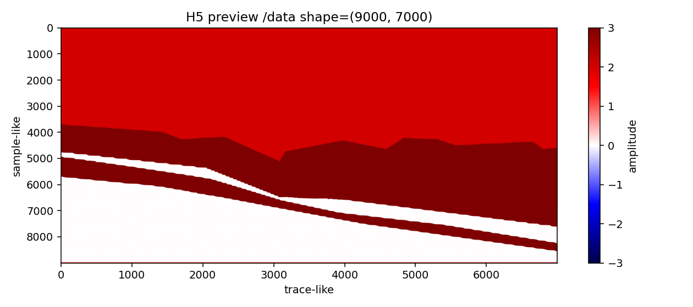
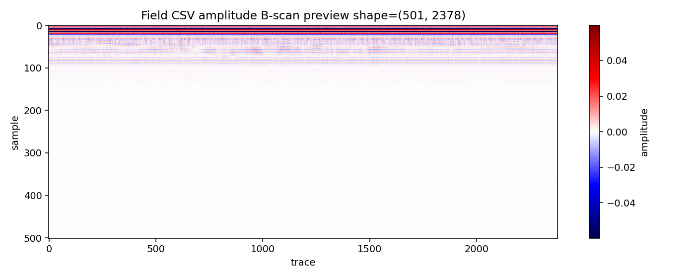
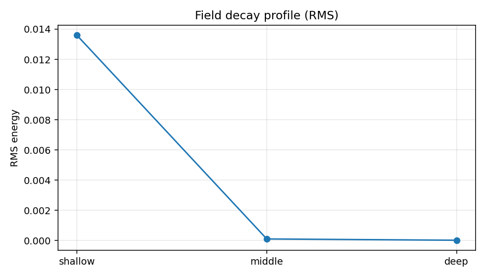
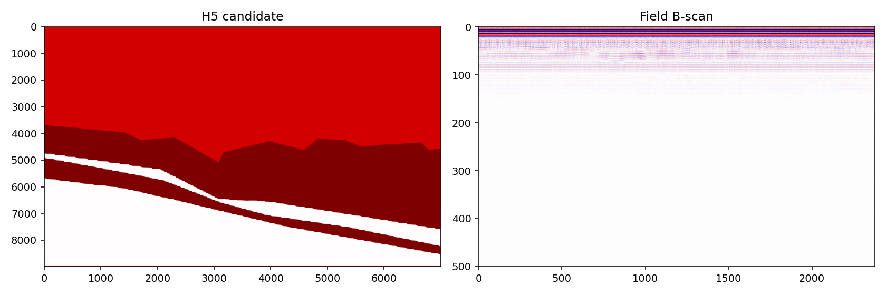

YS-001 YingShan Line9 H5 and Field CSV Data Audit
H5 size: 504001912 bytes
H5 SHA256: 46b4ff7f7f95c532e45703ae68c2983846f5b9a95e586405465908115f6916f4
Field CSV size: 68794423 bytes
Field CSV SHA256: 655f72f99de4cbcb22b1b9be64dc8ebdf2f156accbe9b27729c6862f6b1e172d
H5 SHA256: 46b4ff7f7f95c532e45703ae68c2983846f5b9a95e586405465908115f6916f4
Field CSV size: 68794423 bytes
Field CSV SHA256: 655f72f99de4cbcb22b1b9be64dc8ebdf2f156accbe9b27729c6862f6b1e172d
Field B-scan shape: [501, 2378]
H5 likely role: unknown_or_custom_h5
H5-vs-field comparison feasible: True
H5 likely role: unknown_or_custom_h5
H5-vs-field comparison feasible: True
H5 preview

Field CSV raw preview

Field decay profile

H5 vs Field panel

Missing model/ground-truth inputs
- model.in
- gprMax version
- material settings
- geometry explanation
- source/receiver settings
- trace spacing
- time window
- whether unified_geometry.h5 is native gprMax output or postprocessed file
- screenshot provenance
- known target/layer annotation
- real field Line9 survey metadata